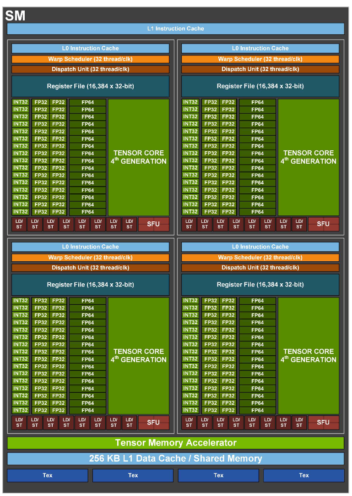

Hopper H100
SM Architecture
New Tensor Memory Accelerator
Fully asynchronous data movement
New Thread Block Cluster
Turn locality into efficiency
New Transformer Engine uses a combination of software and custom Hopper Tensor Core technology designed specifically to accelerate Transformer model training and inference.

HMB3
Bandwidth 3TB/s
5 HBM sites with 80 GB
New DRAM controller with 2x independent channels
Accelerating principles for performance
Data Locality & Cooperative Execution
Latency reduction for parallelized computation
Higher bandwidth due to localized communication
Asynchronous Execution & Data Transfer
Overlap independent work
Keep all units fully utilized
Localized Storage:
GPU
80 GB HMB3 (Bandwidth 3TB/s)
50 MB L2 Cache (Bandwidth 12TB/s)
SM
256KB L1 Data/Shared (Bandwidth 33TB/s)
Thread
1KB RF per thread
64KB per SM Partition
256KB per SM
Spatial Locality:
Grid
GPU
Cluster of Blocks
GPC
Up to 16 blocks
Block of Threads
SM
Threads
Lanes
Dedicated SM-to-SM Comunication within Cluster
Threads can reference another thread Block’s shared memory directly
Distributed Shared Memory(DSMEM) Programming Model
Accelerated Sync and Data Exchange
Accelerating deep learning
2x faster clock-for-clock
accelerate sparse
TMA: efficient copy of DL tensor memory
Transformer Engine
Transformer models are the backbone of language models used widely today from BERT to GPT-3 and require enormous compute resources. Overall, transformer models have been growing much faster than most other AI models at the rate of 275x every two years for the past five years
ThunderKittens
斯坦福让“GPU高速运转”的新工具火了，比FlashAttention2更快
重要的是，所有的计算都发生在流式多处理器中，大部分计算是在寄存器中
H100的利用率=张量核心活跃周期的百分比 +/- 6%
要充分发挥H100的能力，关键是保持张量核心持续运算
用于获取数据的内存地址就占用了芯片的大量资源(TMA)
雷猫包含四种模板类型
寄存器tiles：在寄存器文件上表示二维张量
寄存器向量：在寄存器文件上表示一维张量
共享tiles：在共享内存中表示二维张量
共享向量：在共享内存中表示一维张量
寄存器当然不应该像旧CPU那样32位字。CUDA使用的1024位宽向量寄存器确实是朝着正确方向迈出的一步。但对我们来说，寄存器是16x16的数据tile。我们认为AI需要这样的设计，毕竟，它仍然只是矩阵乘法、归约和重塑